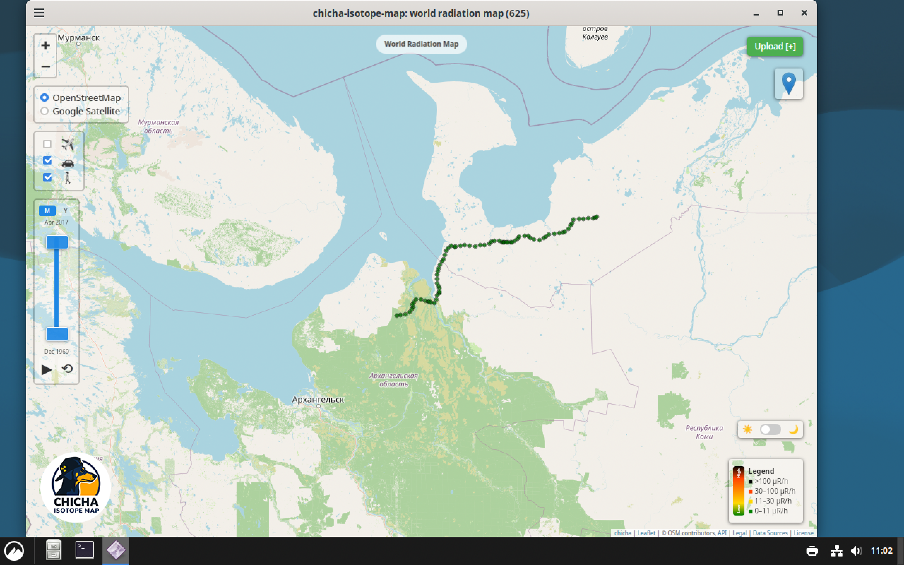

Universal Desktop DMG
Single artifact for Intel + Apple Silicon.
File: .dmg
 Download macOS universal DMG
Download macOS universal DMG
Choose your OS first, then your architecture. Linux desktop builds are available for both GTK 4.0 and GTK 4.1 on amd64 and arm64.
Detecting your platform and architecture…
Linux desktop builds are split by GTK runtime: GTK 4.1 (newer distros like Mint 22+, Ubuntu 24.04+, Debian testing/13+, Fedora 40+) and GTK 4.0 (older LTS stacks like Mint 21.x, Ubuntu 22.04, Debian 12).
DMG installer for Mac desktop users.
Single artifact for Intel + Apple Silicon.
File: .dmg
Download macOS universal DMG
Pick your Windows architecture.
For most Intel/AMD Windows PCs.
 Download Windows amd64 desktop
Download Windows amd64 desktop
For Snapdragon / ARM64 Windows devices.
 Download Windows arm64 desktop
Download Windows arm64 desktop
Pick architecture first, then GTK runtime (GTK 4.0 for older distros, GTK 4.1 for newer distros).
For older GTK 4.0-based desktop stacks.
 Download Linux amd64 GTK 4.0
Download Linux amd64 GTK 4.0
For newer GTK 4.1-based desktop stacks.
Download Linux amd64 GTK 4.1
For ARM64 Linux systems with GTK 4.0.

Download Linux arm64 GTK 4.0For ARM64 Linux systems with GTK 4.1.
Download Linux arm64 GTK 4.1If auto-detection is wrong, choose manually.
Use the matching OS + architecture snippet.
Loading...
Loading...
Loading...
Loading...
sudo fetch -o /usr/local/bin/chicha-isotope-map https://github.com/matveynator/chicha-isotope-map/releases/download/stable-release/chicha-isotope-map_freebsd_amd64 sudo chmod +x /usr/local/bin/chicha-isotope-map /usr/local/bin/chicha-isotope-map
sudo fetch -o /usr/local/bin/chicha-isotope-map https://github.com/matveynator/chicha-isotope-map/releases/download/stable-release/chicha-isotope-map_freebsd_arm64 sudo chmod +x /usr/local/bin/chicha-isotope-map /usr/local/bin/chicha-isotope-map
sudo ftp -o /usr/local/bin/chicha-isotope-map https://github.com/matveynator/chicha-isotope-map/releases/download/stable-release/chicha-isotope-map_openbsd_amd64 sudo chmod +x /usr/local/bin/chicha-isotope-map /usr/local/bin/chicha-isotope-map
sudo ftp -o /usr/local/bin/chicha-isotope-map https://github.com/matveynator/chicha-isotope-map/releases/download/stable-release/chicha-isotope-map_openbsd_arm64 sudo chmod +x /usr/local/bin/chicha-isotope-map /usr/local/bin/chicha-isotope-map